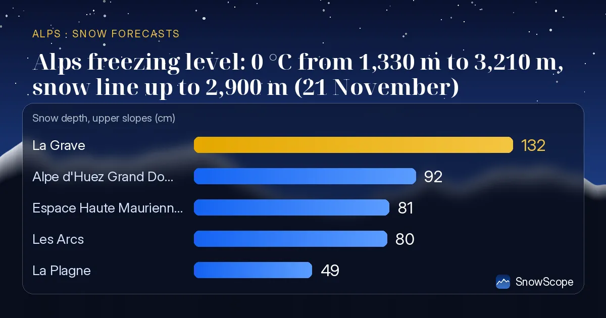
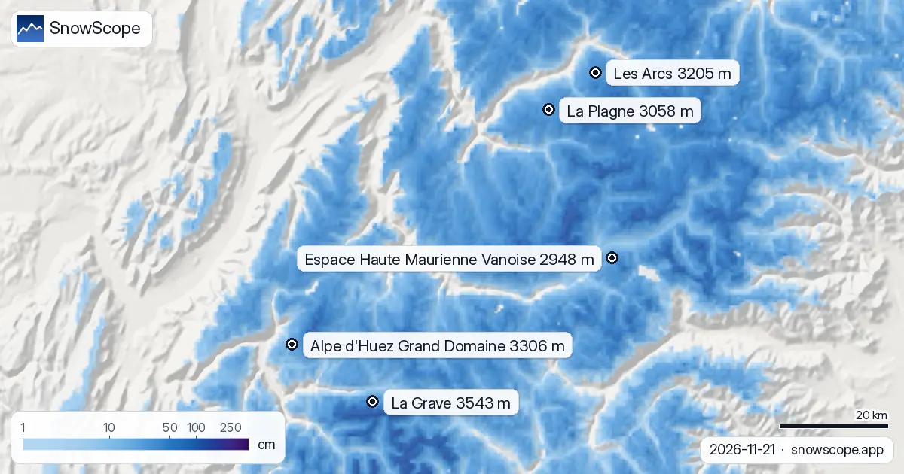

Alps freezing level: 0 °C from 1,330 m to 3,210 m, snow line up to 2,900 m (21 November)
Over the next three days, the 0 °C level in the Alps will swing between 1,330 m and 3,210 m, bringing the snow line down from 2,900 m at the warmest hours on Sunday 22 November to around 1,500 m by Tuesday 24 November. Resorts with deep bases face rain falling on existing snow on Sunday and Monday, before much colder air moves in.
See the live snow forecast for La Grave in the SnowScope appSnow depth, powder alerts and the 3D map, free.
How high is freezing on each day
Saturday 21 November (data day): 0 °C sits between 2,000 m and 2,990 m across the region. This is the warmest day of the forecast. At the warmest hours, the snow line—where rain begins to turn to wet snow—reaches about 2,400 to 2,900 m.
Sunday 22 November: The 0 °C level rises slightly to between 1,860 m and 3,210 m, the widest range of the forecast period. The snow line peaks at around 2,300 to 2,900 m at afternoon. This is when rain-on-snow risk is highest at mid-mountain resorts.
| Resort | Snow depth | New snow, 72 h | Coming, next days | Top |
|---|---|---|---|---|
| La Grave | 132 cm | 92 cm | 90 cm | 3,543 m |
| Alpe d'Huez Grand Domaine | 92 cm | 84 cm | 89 cm | 3,306 m |
| Les Arcs | 80 cm | 102 cm | 74 cm | 3,205 m |
| La Plagne | 49 cm | 91 cm | 73 cm | 3,058 m |
| Espace Haute Maurienne Vanoise | 81 cm | 62 cm | 47 cm | 2,948 m |

Cold air arrives Monday and Tuesday
Monday 23 November marks a sharp drop: 0 °C falls to between 1,340 m and 3,210 m at dawn, then to 1,500 m at warmest hours. The snow line sits near 1,400 to 1,900 m. Existing snow begins to refreeze and bond.
Tuesday 24 November: The cold settles in. 0 °C ranges from 1,330 m (the lowest of the entire period) to 2,480 m. Snow line stays low, around 1,500 m at warmest hours. Skiers on high slopes find stable, dry conditions.
Where rain meets snow on Sunday
Alpe d'Huez Grand Domaine (base 1,124 m, top 3,306 m) faces the classic rain-on-snow setup: 92 cm sits on the upper slopes, but on Sunday 22 November the snow line is near 2,300 m—well above mid-mountain. Rain will fall on the existing snowpack between 2,300 m and the base. When rain falls on thin snow, the pack becomes heavy and wet, then refreezes hard at night, leaving icy surfaces underneath.
Les Arcs (base 1,222 m, top 3,205 m) has the same exposure: about 80 cm high, snow line near 2,400 m on Sunday 22 November. Rain-on-snow risk is flagged. La Plagne (base 1,217 m, top 3,058 m) holds only 49 cm but sits in the same wet zone on Sunday 22 November, snow line near 2,400 m.
High Alps: dry snow by Monday
La Grave (base 3,196 m, top 3,543 m) stays above the rain-on-snow zone throughout. The base sits in the all-day-below-freezing zone on Saturday 21 November and Tuesday 24 November, so precipitation falls as snow or stays frozen. With 132 cm already on the upper slopes and 90 cm forecast over the next days, dry snow will accumulate above 2,000 m.
Espace Haute Maurienne Vanoise (base 1,306 m, top 2,948 m) sees rain-on-snow risk on Sunday 22 November (snow line near 2,200 m), but the peak sits in dry-snow territory. The resort receives less fresh snow (47 cm forecast) than higher neighbors, and by Monday the whole mountain turns cold.
What to expect at low valleys
Andermatt (2,963 m) is forecast to receive 64 mm of precipitation over the next days. Because the base sits high, the snow line stays near 1,170 m during wet hours on Sunday 22 November—well below the resort. All precipitation arrives as snow.
In contrast, Lugano (300 m) in the southern lowlands receives 44 mm with a snow line near 950 m while it falls: no snow there. Altdorf (450 m) and Innsbruck (580 m) also remain in rain zones; snow reaches only the high peaks.
What this means for your plan
If you are heading to a mid-mountain resort like Alpe d'Huez or Les Arcs on Sunday 22 November, expect soft, wet snow lower down and rain at the base. High slopes stay colder and drier. Ski early and high, before the sun softens the existing pack. After Monday 23 November, cold air locks in and the snowpack begins to consolidate.
High resorts like La Grave and Andermatt see snow fall continuously from Saturday through Tuesday, with the best dry-snow conditions arriving Monday 23 November onward. The 0 °C level is a forecast and can shift by several hundred metres; check the map again the day before you go.
Tips for skiers
- On Sunday 22 November, ski high and early at mid-mountain resorts (Alpe d'Huez, Les Arcs, La Plagne): the snow line rises to 2,300–2,400 m, so lower terrain will be wet and heavy by afternoon.
- Above 2,400 m on Sunday, stay on north-facing slopes to avoid the sun; by Monday 23 November, colder air means snow will be stable across all slopes.
- If you plan to go off-piste on any of these days, check the official avalanche bulletin first (links below): rain on snow and then refreeze can create unstable layers.
- The 0 °C level forecast can shift by hundreds of metres. The map updates daily; use it to check conditions the day before you travel.
- Snow on the map does not confirm a resort is open: always check the resort website for lift status and opening dates.
About these numbers
Resort snow depths are the deepest snow on the resort's upper slopes on the date shown; they are estimates for an area, not a measurement at one point. Forecasts can change. Always read the official avalanche bulletin before going off-piste.
Official avalanche bulletins: EAWS (Alps)
Cite this report
For research, teaching or the press: the numbers and charts are free to reuse under CC BY 4.0 with this citation.
SnowScope (2026), Alps freezing level: 0 °C from 1,330 m to 3,210 m, snow line up to 2,900 m (21 November), https://snowscope.app/blog/en/2026/11/alps-freezing-level-snow-line-21-november-2026.html, accessed 2026-11-21
SnowScope (Atlas Labs). (2026, November 21). Alps freezing level: 0 °C from 1,330 m to 3,210 m, snow line up to 2,900 m (21 November). SnowScope snow reports. https://snowscope.app/blog/en/2026/11/alps-freezing-level-snow-line-21-november-2026.html
BibTeX
@misc{snowscope2026alpsfreezinglevelsnowlin,
author = {{SnowScope (Atlas Labs)}},
title = {Alps freezing level: 0 °C from 1,330 m to 3,210 m, snow line up to 2,900 m (21 November)},
year = {2026},
month = nov,
howpublished = {\url{https://snowscope.app/blog/en/2026/11/alps-freezing-level-snow-line-21-november-2026.html}},
note = {Published 2026-11-21 12:33 UTC; accessed 2026-11-21}
}· CC BY 4.0 · Methods, data and tools →
La Grave: snow and temperature by height, this winter vs last (tools) →
Follow La Grave
Free: a message when fresh snow is coming, and the forecast every morning.
More snow reports

Early-season snow in the Alps is running 38% above the 46-year average. La Plagne's mid-slopes hold 36 cm more than usual for this date, with heavy snow forecast through Sunday.

Les Arcs forecast for 12 November: 69 cm incoming at the top, 46 cm at mid-mountain over the next seven days. Snow is building.
La Grave's top slopes near 3400 m will collect 49 cm in the week of 23–29 November 2026, with Wednesday 25 as the peak day. Data from 16 November.